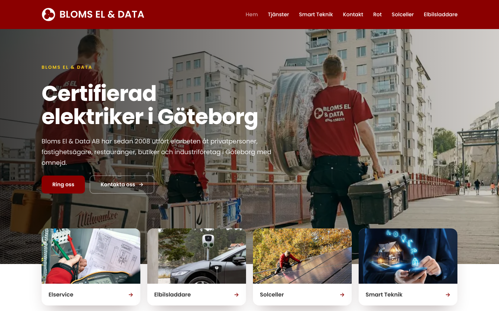
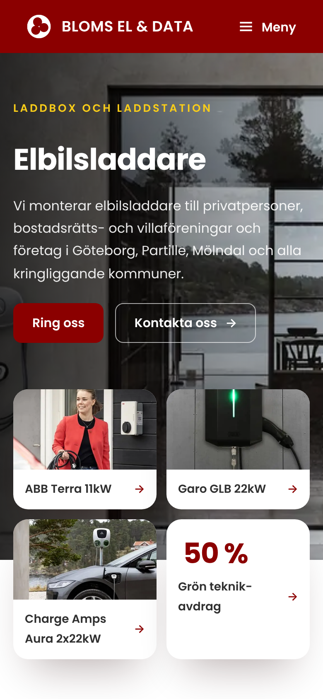
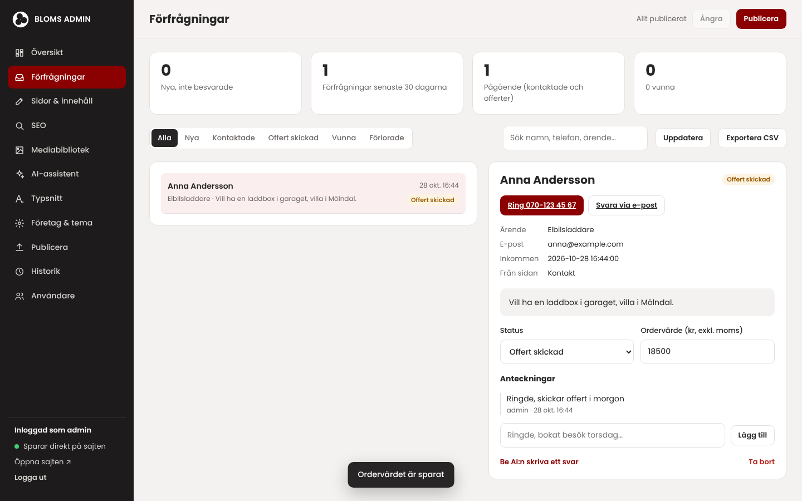
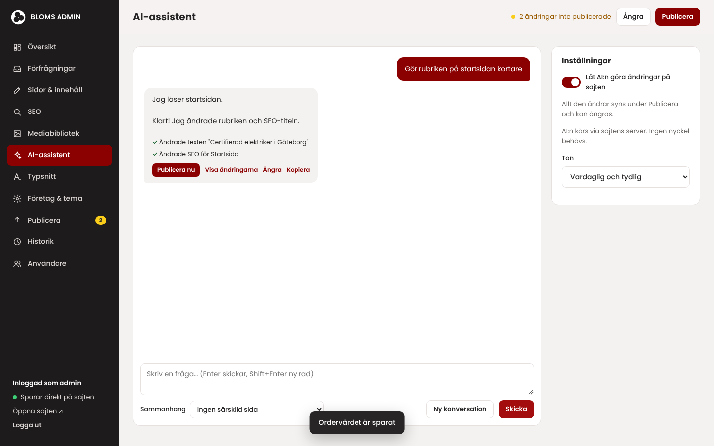
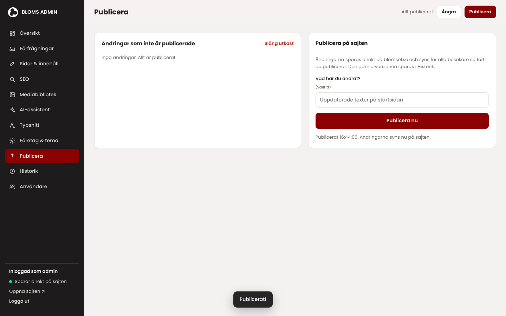

Förslag till Bloms El & Data AB
29 sidor, egen adminpanel, förfrågningsinkorg och AI-assistent. Byggd för sökmotorer och AI från grunden.


Sammanfattning
Pris, exkl. moms
Ni behåller domänen och webbhotellet. Vi driftsätter före 7 december, när bindningstiden för nuvarande abonnemang går ut. Erbjudandet gäller till 10 december 2026.
En enda extra laddbox- eller elcentralsorder betalar hela paketet, ofta flera gånger om.
Er del: resultatet avgörs till stor del av att ni ber kunder om omdömen och ger oss åtkomst till Google-profilen. Se sidan "Er del av jobbet".
Hur kunderna letar 2026
Den som behöver en elektriker googlar, läser omdömen och frågar i allt högre grad ChatGPT eller Googles AI-översikt. Siffrorna nedan är från de senaste mätningarna.
av svenska internetanvändare använder AI-tjänster. 52 % använder ChatGPT.
Internetstiftelsen, Svenskarna och internet 2026använder Googles AI-översikter, alltså de AI-svar som visas överst i Google.
Internetstiftelsen, Svenskarna och internet 2026läser omdömen innan de väljer ett lokalt företag. 68 % väljer bara företag med minst 4 stjärnor.
BrightLocal, Local Consumer Review Survey 2026av trafiken på svenska webbplatser kommer från mobilen.
StatCounter, september 2026Andel av klicken i Googles sökresultat
Backlinko, 4 miljoner sökresultat (uppdaterad 2025)
När Google visar en AI-översikt klickar folk på ett vanligt resultat i 8 % av fallen, mot 15 % utan. Företag som nämns i AI-svaret får 35 % fler klick.
Det betyder att det inte räcker att finnas med. Man måste vara det svar Google och AI-tjänsterna väljer att visa.
Pew Research Center 2025 · Seer Interactive 2025
Test 1 och 2: synlighet och SEO
Vi testade fem sökningar som kunder gör och gick igenom alla sidor på nuvarande och nya sajten med samma verktyg.
| Sökning | Syns | Vad som syns i stället |
|---|---|---|
| elektriker Göteborg | Nej | Reco, Eniro, jobbannonser |
| installera laddbox villa Göteborg | Nej | Göteborg Laddbox (258 omdömen), El-Fast (435 omdömen) |
| byta elcentral Göteborg pris | Nej | Byggahus forum, Offerta |
| elektriker Mölndal | Nej | Trustpilot, Reco, Fässbergs El |
| Bloms El & Data Göteborg | Nej | Andra företag med liknande namn |
Test 28 oktober 2026 i ett webbsökindex (inte Google.se, så det är en indikation). Sajterna som syns har gemensamt många omdömen och en egen sida per tjänst.
| Mått | Nuvarande | Nya sajten |
|---|---|---|
| Antal sidor | 14 | 29 |
| Egna sidor per tjänst | 3 | 15 |
| Egna sidor per område | 6 | 7 |
| Sidor med strukturerad data (schema) | 4 av 14 | 29 av 29 |
| Sidor med vanliga frågor som Google kan läsa | 0 av 14 | 26 av 29 |
| Rätt längd på titel och beskrivning | 9 av 14 | 29 av 29 |
| Bilder med alt-text | 89 % | 92 % |
| Ord text totalt (det Google och AI läser) | 6 555 | 13 571 |
| llms.txt för AI-tjänster | "bloms2", 1 länk | Bloms El & Data, alla sidor |
Uppmätt med Chromium på alla 14 sidor på blomsel.se och alla 29 sidor på nya sajten, 28 oktober 2026. Wix sköter en del teknisk SEO bra, till exempel kanoniska adresser. Den stora skillnaden är innehållet: dubbelt så mycket text, en sida per tjänst och vanliga frågor.
Test 3: hastighet på mobilen
Vi mätte tre sidor på nuvarande och nya sajten i samma test: en vanlig mobil med långsam 4G-uppkoppling, tre mätningar per sida. Diagrammen visar startsidan.
| Sida | Innehållet syns, nu | Syns, ny | Laddad, nu | Laddad, ny | Data, nu | Data, ny |
|---|---|---|---|---|---|---|
| Startsida | 7,8 s | 0,8 s | 12,6 s | 0,9 s | 1 925 kB | 318 kB |
| Elbilsladdare | 0,9 s | 0,8 s | 11,2 s | 0,9 s | 1 551 kB | 120 kB |
| Kontakt | 0,7 s | 0,7 s | 8,2 s | 0,9 s | 1 503 kB | 78 kB |
Ärligt sagt: på undersidorna visar Wix första texten något snabbare (0,9 s mot 0,8 s), men sidan laddar sedan vidare i över 10 sekunder och mobilen svarar trögt under tiden. På startsidan syns innehållet 10 gånger snabbare på nya sajten.
Chromium, mobil 412x823, nätverk 150 ms RTT / 1,6 Mbit/s, CPU 4x långsammare, cache av, median av 3 körningar. Nuvarande sajt mätt live på blomsel.se. Nya sajten mätt på en testserver med komprimering och cache som webbhotellet, med samma nätverksbegränsning. "Innehållet syns" är Largest Contentful Paint, Googles mått, där under 2,5 s räknas som bra. "Mobilen svarar inte" är Total Blocking Time.
Test 4: Googles egna testverktyg
Vi körde Lighthouse, samma test som Googles PageSpeed Insights bygger på, på 7 sidor på nuvarande sajt och alla 29 sidor på nya sajten. Strukturerad data kontrollerades med validator.schema.org.
Sidorna Elbilsladdare och Smart teknik på nuvarande blomsel.se har en instruktion till Google om att inte visas i sökresultaten (noindex) och saknas i sajtens sitemap. Laddboxar är en av de mest efterfrågade tjänsterna, men sidan kan i dag inte hittas på Google.
På nya sajten kan alla 29 sidor indexeras och alla finns i sitemapen.
| Kontroll | Nuvarande | Nya |
|---|---|---|
| Sidor med företagsdata (Electrician) | 4 av 14 | 29 av 29 |
| Sidor med tjänstebeskrivning (Service) | 0 | 22 |
| Sidor med vanliga frågor (FAQPage) | 0 | 26 |
| Fel i validator.schema.org | – | 0 |
Lighthouse 13.5, mobil, samma inställningar som PageSpeed Insights. Nuvarande sajt testad live på blomsel.se, nya sajten på en testserver med komprimering och cache som webbhotellet. Google visar inte längre vanliga frågor som extra rader i sökresultaten för de flesta företag, men frågorna hjälper Google och AI-tjänster att förstå vad ni gör.
Det här ingår för 3 000 kr
Startsida, en egen sida för varje tjänst (laddbox, solceller, elcentral, belysning, datanät, kraft, golvvärme, kök och badrum, batterilager med flera), sidor för varje område från Mölndal till Borås, om oss, vanliga frågor och kontakt. Samma röda färg och Poppins som i dag, i en modernare form.

Allt som kommer in via kontaktformuläret hamnar i adminpanelen och mejlas till er. Markera som kontaktad, offert skickad, vunnen eller förlorad, skriv anteckningar och se ordervärdet. Ring eller svara med ett klick.

Skriv "byt telefonnummer på hela sajten" eller "gör texten om laddboxar mer säljande". AI:n läser sidorna, gör ändringen och visar vad den gjort. Ni granskar och publicerar med ett klick, eller ångrar.

Klicka på en text på sajten och skriv. Byt bilder, SEO-texter, telefonnummer, färger och typsnitt. Publicera direkt, utan filer att ladda upp. Alla tidigare versioner sparas och kan återställas.
Paketen
Grundpaketet ger en sajt som är tekniskt rätt byggd för Google och AI. Det avancerade paketet gör jobbet utanför sajten som avgör den lokala rankingen.
| Grund 3 000 kr | Avancerad 7 000 kr | |
|---|---|---|
| Ny webbplats, 29 sidor, mobilanpassad | ✓ | ✓ |
| Adminpanel, förfrågningsinkorg och AI-assistent | ✓ | ✓ |
| Titlar, beskrivningar, sitemap och alt-texter | ✓ | ✓ |
| Strukturerad data: företag, tjänster, vanliga frågor | ✓ | ✓ |
| Vidarekoppling från gamla adresser, så att Google-länkar fungerar | ✓ | ✓ |
| llms.txt och faktasidor för AI-tjänster | ✓ | ✓ |
| Sökordsanalys och finjustering av varje sida | – | ✓ |
| Google Företagsprofil: kategori, tjänster, bilder och områden | – | ✓ |
| Samma uppgifter i Hitta, Eniro, Reco, Bing och Apple Kartor | – | ✓ |
| Enkelt flöde för att be kunder om omdömen | – | ✓ |
| Google Search Console och Bing Webmaster | – | ✓ |
| AI-synlighetstest före och efter, rapport efter tre månader | – | ✓ |
Uppdateringar av hemsidan, nya sektioner och omfattande ombyggnationer när ni behöver dem. Tillval till båda paketen.
Grundläggande SEO kostar normalt 3 000–5 000 kr i månaden och löpande optimering 5 000–15 000 kr i månaden. Det avancerade paketet är en engångskostnad på 4 000 kr.
Offerta, Vad kostar sökmotoroptimering, 2025
Alla priser exklusive moms.
Ärligt svar
Ja, för ett lokalt elföretag är det de här åtgärderna som påverkar rankingen mest, och priset motsvarar ungefär en månads billigaste SEO-abonnemang. Men det finns saker ingen kan lova.
Google Företagsprofil hjälpcenter · Whitespark, Local Search Ranking Factors 2026
Google Företagsprofil och omdömen brukar ge effekt inom några veckor. Placeringen i vanliga sökresultat tar normalt 3–6 månader.
Extra omsättning per år med 30–50 % av förfrågningarna till order och ett snittjobb på 15 000 kr
Exempel, inte prognos. Omsättning, inte vinst. Effekten kommer från nya sajten och SEO tillsammans. Jobbvärden: laddbox 10 000–20 000 kr, byte av elcentral 8 000–20 000 kr (Offerta 2026).
Er del av jobbet
Vi bygger sajten och gör den tekniska SEO:n. Det gör att ni kan synas. Hur mycket ni syns, och hur många som väljer er, avgörs av saker bara ni kan göra. Konkurrenterna som syns i dag har 258 och 435 kundomdömen.
Utan omdömen och åtkomst till Google Företagsprofil blir effekten av SEO-arbetet betydligt mindre, oavsett paket.
ELEVATE STUDIO
WEBBUTVECKLING / OFFERT
Producent: Elevate Studio (PJM Projekteffektivitet AB, org.nr 556969-4358)
Producentens företrädare: Isak Mattsson
Beställare: Bloms El & Data AB, org.nr 556754-3656, Blomstergatan 5, 411 04 Göteborg
Beställarens företrädare: Rustan Blom
Utveckling och leverans av en ny, modern och mobilanpassad webbplats för Beställaren på blomsel.se.
Grundpaket, i uppdraget ingår:
Tillval A: Avancerad SEO och AIO
Tillval B: Löpande underhåll
Beställaren äger sin domän och sitt webbhotell, och betalar webbhotellets avgifter. Elevate Studio driftsätter webbplatsen där. Adminpanelen och inkorgen kräver PHP, som ingår hos de flesta webbhotell. AI-assistenten använder en API-nyckel från Anthropic, och användningen debiteras av Anthropic.
Webbplatsen driftsätts efter godkännande och när åtkomst till webbhotellet finns, så att bytet hinner ske innan bindningstiden för det nuvarande abonnemanget löper ut 7 december 2026.
ELEVATE STUDIO
OFFERT / VILLKOR OCH GODKÄNNANDE
| Post | Pris (exkl. moms) |
|---|---|
| Grundpaket: webbplats med adminpanel, förfrågningsinkorg, AI-assistent, grundläggande SEO och enkel AIO – fast pris | 3 000 kr |
| Tillval A: Avancerad SEO och AIO | + 4 000 kr |
| Tillval B: Löpande underhåll | 99 kr/mån |
| Totalt grundpaket med Tillval A | 7 000 kr |
Grundpaketet och Tillval A är engångsbelopp. Tillval B gäller uppdateringar av webbplatsen, nya sektioner och omfattande ombyggnationer av webbplatsen, och löper per månad tills det sägs upp.
Fast pris och tillval faktureras vid driftsättning. Löpande underhåll faktureras från och med driftsättningen. Betalningsvillkor: 30 dagar. Samtliga priser anges exklusive moms.
Beställaren kan acceptera denna offert genom att svara på mejlet med följande text och stryka det som inte ska ingå:
Jag godkänner offert nr 2026-1028-BLOMS och beställer grundpaketet / grundpaketet med Tillval A, med / utan Tillval B, enligt offertens villkor.
Genom godkännandet accepterar Beställaren uppdragets omfattning, priser, betalningsvillkor och övriga villkor i denna offert.
Isak Mattsson
Isak Mattsson, Elevate Studio
Uppsala, 28 oktober 2026
Rustan Blom, Bloms El & Data AB
Ort och datum
Källor
Där källorna är amerikanska har vi angett det i underlaget. Svenska siffror är från Internetstiftelsen och StatCounter.
Tack för att ni tar er tid. Hör av er om något är oklart, så går vi igenom förslaget tillsammans.
Med vänliga hälsningar
Isak Mattsson
Isak Mattsson
Elevate Studio
info@elevatestudio.nu · elevatestudio.nu